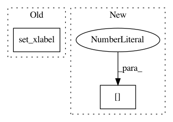

81d96f30b9d3368f43d9f94074256e53cee2baa2,doc/examples/transform/plot_ssim.py,,,#,40
Before Change
label = "MSE: %2.f, SSIM: %.2f"
ax0.imshow(img, cmap=plt.cm.gray, vmin=0, vmax=1)
ax0.set_xlabel(label % (mse_none, ssim_none))
ax0.set_title("Original image")
ax0.axes.get_yaxis().set_visible(False)
ax1.imshow(img_noise, cmap=plt.cm.gray, vmin=0, vmax=1)
After Change
label = "MSE: {:.2f}, SSIM: {:.2f}"
ax[0].imshow(img, cmap=plt.cm.gray, vmin=0, vmax=1)
ax[0].set_xlabel(label.format(mse_none, ssim_none))
ax[0].set_title("Original image")
ax[1].imshow(img_noise, cmap=plt.cm.gray, vmin=0, vmax=1)
In pattern: SUPERPATTERN
Frequency: 4
Non-data size: 2
Instances
Project Name: scikit-image/scikit-image
Commit Name: 81d96f30b9d3368f43d9f94074256e53cee2baa2
Time: 2016-09-04
Author: multicolor.mood@gmail.com
File Name: doc/examples/transform/plot_ssim.py
Class Name:
Method Name:
Project Name: theislab/scanpy
Commit Name: 1b7c77c0fb021afe91075726417a935677a84763
Time: 2017-09-22
Author: f.alex.wolf@gmx.de
File Name: scanpy/plotting/tools.py
Class Name:
Method Name: aga_path
Project Name: theislab/scanpy
Commit Name: 8ae527b26368f10e14792fd176b39815675501c8
Time: 2017-09-18
Author: f.alex.wolf@gmx.de
File Name: scanpy/plotting/tools.py
Class Name:
Method Name: aga_path
Project Name: kymatio/kymatio
Commit Name: 4f1e7f2f936bf5f3e6d1da8d8be843dc3273fe67
Time: 2018-11-21
Author: janden@flatironinstitute.org
File Name: examples/1d/plot_filters.py
Class Name:
Method Name: